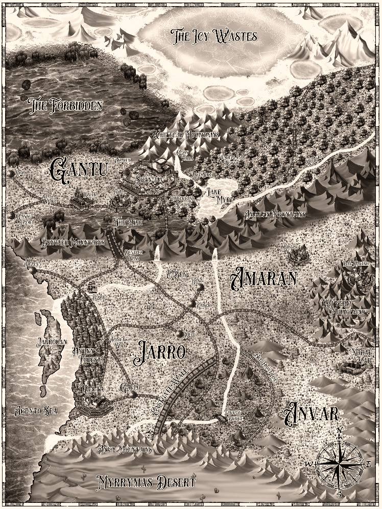

Wyvern
The regional map focuses on the lands and kingdoms central to Book One.
The Cartographer's Atlas
The known world expands as the trilogy progresses. Begin with the regional map from Wyvern, then explore the wider world revealed in Maelstrom and Dragon Knight.

The regional map focuses on the lands and kingdoms central to Book One.
The known world expands westward towards the Great Maelstrom, the Roaring Shallows and Passage West.
The expanded map reveals the full scale of the world in which the trilogy reaches its conclusion.